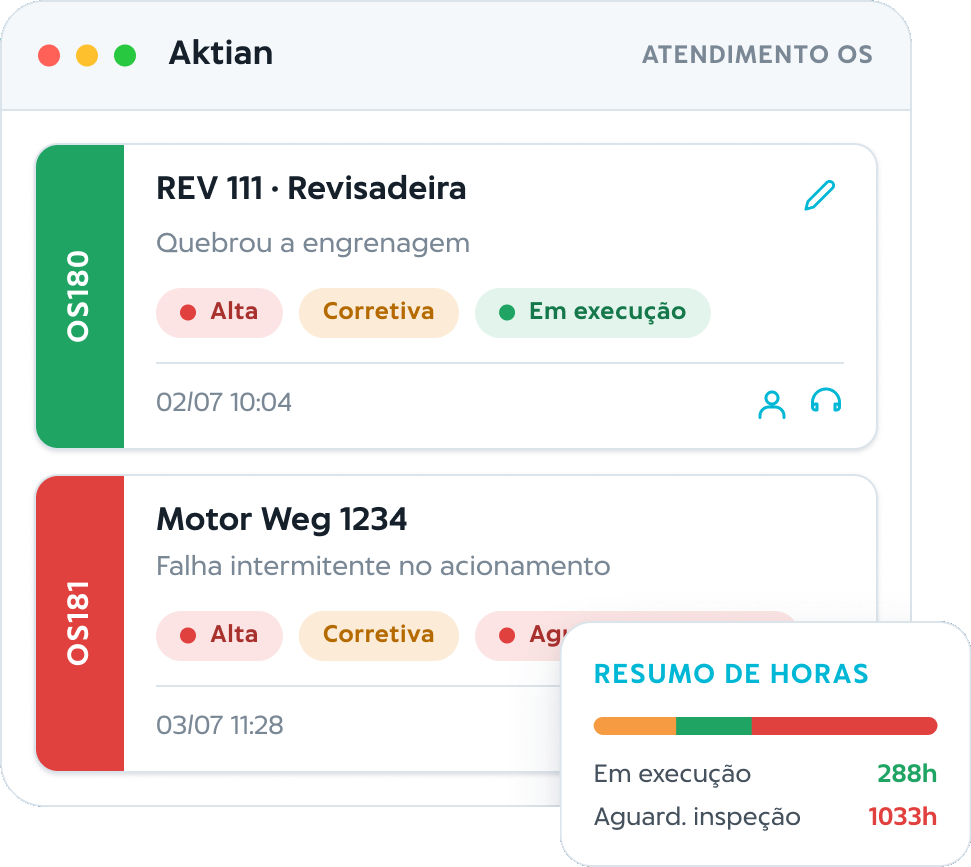

Controle e rastreabilidade da manutenção industrial, sem complicação.
Com o Aktian by ŌKEA, você organiza a manutenção corretiva, registra atividades em campo e ganha histórico confiável para decidir com segurança.

Quando a manutenção não tem controle, a fábrica perde tempo duas vezes.
- Informações se perdem entre turnos e pessoas.
- Histórico fica incompleto e difícil de consultar.
- Falhas se repetem sem rastreabilidade.
- A decisão vira percepção, não evidência.
Uma rotina clara para registrar, acompanhar e gerenciar.
Solicitações e ordens de serviço
Registre problemas com padrão e gere ordens para executar e acompanhar o status até a conclusão.
Atividades, horas e insumos
Registre o que foi feito, o tempo de execução e os insumos no momento da intervenção.
Histórico centralizado por ativo
Toda a vida do ativo em um só lugar, pronta para consultar e atacar recorrência.
Indicadores e dashboards
Visão gerencial de ordens, tempos e criticidade para priorizar o que importa.
Mobilidade para campo
Acesso web e aplicativo para a equipe registrar e consultar onde a manutenção acontece.
Integração com o ecossistema ŌKEA
Conecta com o Asterian para unir eventos da produção à rotina de manutenção.
Do chamado à decisão, em poucos passos.
Abra a solicitação
Descreva o problema com registro padronizado.
Gere a ordem
Acompanhe a ordem de serviço até a conclusão.
Registre a execução
Atividade, tempo e insumos no momento certo.
Consulte e melhore
Histórico e indicadores para atacar recorrência.
Visibilidade do que está acontecendo e do que está se repetindo.
- Ordens por status, ativo, criticidade e responsável.
- Tempos de resposta e execução para melhorar a rotina.
- Leitura rápida para priorizar ações.

Feito para funcionar na prática.
Simplicidade de uso
Para equipe de campo e liderança.
Implantação rápida
Comece a registrar desde o primeiro dia.
Modelo SaaS acessível
Sem infraestrutura complexa.
Suporte próximo
Atendimento especializado.
Ecossistema ŌKEA
Integra com o Asterian.
O Aktian é protagonista agora e evolui dentro do ecossistema ŌKEA.
Além da rotina de manutenção corretiva, a plataforma faz parte de uma visão integrada que conecta produção, manutenção e monitoramento operacional. Sensores de energia e vibração entram como evolução planejada, reforçando o caminho para uma gestão cada vez mais orientada por dados.
Tudo claro antes de começar.
O trial tem custo?
Não. Você pode usar por 7 dias para validar a rotina com a sua equipe.
O Aktian funciona no celular?
Sim. A equipe registra e executa ordens de serviço direto pelo celular, no campo.
É só para têxtil?
Não. O Aktian atende qualquer operação industrial que precise organizar a manutenção corretiva.
Comece com 7 dias grátis e ganhe controle da manutenção.
Valide a rotina com sua equipe e veja o histórico se formar desde o primeiro dia.